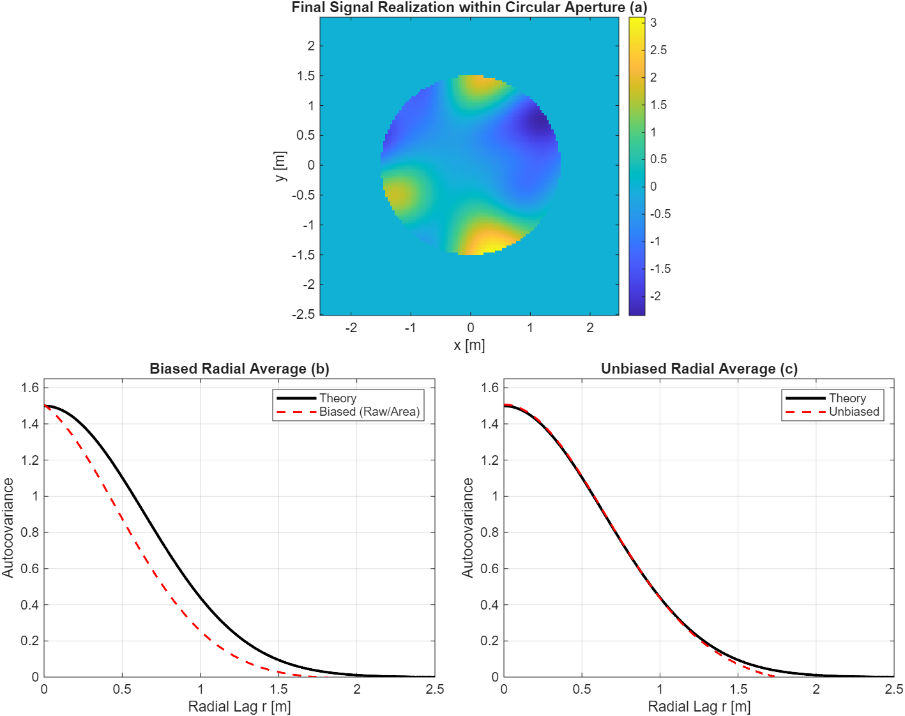

Unbiased Correlation of 2-D Random Processes
While 1-D correlation is a staple of signal processing, optical systems naturally operate in two dimensions. Transitioning from 1-D temporal signals to 2-D spatial signals requires a more rigorous handling of the observation window. Building on the concepts from Correlation Integral with Window Functions—specifically the final section regarding 2-D window functions—we can extend the unbiasing procedure to account for the complex geometries, such as circular apertures, commonly found in optical hardware.
In 2-D, the "slide and multiply" overlap area (the area of overlap between a mask and its shifted version) decreases as the spatial lag \((\tau_x, \tau_y)\) increases. Without correction, this geometric roll-off biases the correlation estimate toward zero. To recover the true stationary covariance of the underlying process, we must divide the raw correlation by the autocorrelation of the mask itself.
Numerical Verification
The following script, checkXcorr2.m, verifies this unbiasing procedure for a circular aperture. It generates an ensemble of random realizations using the subharmonic method to ensure accurate low-frequency statistics. For each realization, a mask is applied and the data is zero-padded into a \(2N \times 2N\) grid. Centering the data within this larger grid ensures that the correlation peak (zero lag) is located at the center of the output array, specifically at index \((N+1, N+1)\).
The correlation is computed using the function corr2_ft.m, which is a new, updated version of the one provided in the book. This function implements the correlation theorem via Fourier transforms and corrects the statistical bias by dividing the result by the autocorrelation of the aperture mask. This divisor represents the absolute area of overlap at each spatial lag.
Ensemble Results and Radial Averaging
For isotropic processes (those with no preferred orientation), we can improve our statistical confidence by averaging the 2-D correlation result over the azimuthal angle. The function azimuthal_average.m utilizes all pixel pairs at a given radial lag \(r\) to produce a smooth 1-D profile from the 2-D data.
By comparing the biased and unbiased radial averages in Figure 1, the effect of the mask becomes clear. The biased estimate significantly underestimates the variance at all lags because the windowing effect is not accounted for. In contrast, the unbiased estimate recovers the theoretical Gaussian covariance and accurately tracks the intended variance at the origin.
This unbiasing approach is essential for verifying that simulated atmospheric phase screens or other random optical fields correctly represent the intended spatial statistics, especially when the fields are observed through finite-sized telescope apertures.